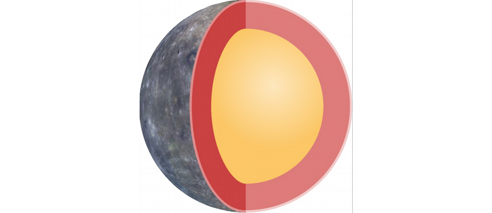

ASTR101 Ch 7-8
Ch 9 - Cratered Worlds
General Properties of the Moon
- The Moon has no atmosphere, so that ancient happenings are preserved, and the Moon is deficient volatiles.
- The Moon and Mercury share many similarities; see Table 9.1.
- Both are geologically dead.
Exploration of the Moon
- Lunar exploration began with telescopic observations.
- Russia took photos of the lunar far side in 1959 with Luna 3 and landed on its surface in 1966, transmitting pictures and data to Earth.
- The US Apollo program sent 12 astronauts to the lunar surface from 1968 to 1972; the first arrived in 1969. The program achieved three major objectives:
- Astronauts collected 400 kg of samples for analysis.
- Each landing after the first left a lunar surface experiment package (ALSEP).
- Orbiting Apollo command modules analyzed lunar surface from above.
- Lunar missions lasted until 1972.
Composition and Structure of the Moon
- Density of only 3.3 g/cm3, the Moon is made entirely of silicate rock. No large metal core (measured with seismometers). Little water on Moon in chemically bound form, in rocks.
- NASA crashed LCROSS (lunar crater observation and sensing satellite) into Moon's South pole at 9000 km/hr, releasing a plume of water vapor and other chemicals visible o other spacecrafts.
- Estimated total water on Moon is hundreds of billions of tons; only enough to fill a lake 100 miles across.
- Estimated to be from asteroids and comets, some small fraction of their water froze in extremely cold regions (cold traps).
The Lunar Surface
General Appearance
- Lots of craters named after scientists, vast splotches of darker lava flows erroneously recognized as seas (sea is mare in Latin) and named, eg., Mare Nubium. Prominent craters named after prominent scientists by Vatican scientists, except Galileo, who they named a small crater after.
- Though the moon appears similar, its geological features are created differently than Earth's.
Lunar History
- Lunar rocks were radioactively dated to be up to 3.3-4.4 billion years old, much older than Earth's. Keep in mind Earth and the Moon were created 4.5-4.6 billion years ago.
- Moon crust is made of 83% silicate rocks called anorthosites, in regions known as the lunar highlands, which are 4.1-4.4 billion years old.
- The maria cover 17% and are much less cratered, consisting mostly of dark-colored basalt from volcanic eruptions billions of years ago which covered impact basins of colliding material.
- Major lunar volcanic activity ceased about 3.3 billion years ago.
On the Lunar Surface
- "The surface is fine and powdery. I can pick it up loosely with my toe. But I can see the footprints of my boots and the treads in the fine sandy particles." - Neil Armstrong
- Boots sank several centimeters into fine dust of upper surface of lunar maria.
- Without atmosphere, Moon experiences greater temperature fluctuations, from -173 °C to above 100 °C.
Impact Craters
Volcanic Versus Impact Origin of Craters
- Astronomers didn't realize lunar craters were result of impacts—citing rarity of impact craters on Earth—and thought they were the result of volcanic activity.
- Grove Gilbert, a geologist, suggested they were formed from impacts.
- Turns out the impacts are circular because of the minimum speed that gravity gives them and their resulting symmetric explosions, but Gilbert's theory wasn't accepted until after WWI when such explosion craters were studied to be circular.

The Cratering Process
- Projectile penetrates 2-3 times its diameter into planet, will form 10-15 times its diameter of a crater.
- Resulting shockwave spread into planet with heat equivalent to nuclear bomb.
- Ejecta are thrown out of the crater, which fall like an ejecta blanket to fill the crater.
- Higher speed ejecta travel farther and can leave their own secondary craters.

- Different features are visible based on the lighting angle!

Using Crater Counts
- Recall that we can age planets using craters to see when the last smoothing activity took place.
- Can make inferences about craters based on craters on lunar maria or current number of projectiles (asteroids and comets)—eg, for the Moon, a 1 km crater should be produced on average every 200 millenia, a 10 km crater every few million years, and one or two 100 km craters every billion years.
- This results in an estimate of several billion years for the craters in the maria, which matches Moon rock sample radioactive dating.
- Comparing crater rates on highlands and maria on the Moon tells us that comets formations took place at a much higher rate before 3.8 billion years ago: highlands are 4.2 billions years old but have 10 times as many craters.

The Origin of the Moon
- Earlier hypotheses for Moon origin:
- Fission Theory: Moon was part of Earth but separated early on.
- Sister Theory: Moon formed together (but independently of Earth.
- Capture Theory: Moon formed elsewhere and was captured by Earth.
- Do they hold up?
- No - Modern calculations show this sort of splitting to be impossible, and some chemical differences unexplained.
- Maybe.
- No - No way for the Moon to slow down enough after entering Solar System to orbit Earth, and the orbit would be more eccentric, and their compositions are too similar.
The Giant Impact Hypothesis
- Giant Impact Hypothesis: An Mars-sized object hit Earth, nearly breaking the planet apart, creating a dust cloud that condensed into the Moon—there is increasing evidence of projectiles of planetary mass in inner Solar System during terrestrial planet formation.
- This explains the Moon's compositional similarity to Earth and its lack of metal, as well as the loss of volatile elements.
Mercury
Mercury's Orbit
- Nearest to the Sun, so fastest orbit by Kepler's 3rd Law (88 Earth-day period).
- Named for Roman messenger god.
- Too close to Sun to see, best seen as far from Sun as possible.
- Has a higher eccentricity of 0.206.
Composition and Structure
- Smallest planet (not counting dwarf planets) at 4878-km diameter.
- Density of 5.4 g/cm3, meaning it differs in composition from Moon.
- Must be composed of heavier metals, probably 60% iron-nickel core by mass and remainder in silicates, with a core of 3500 km and mantle of remaining 700 km.
- Does have a weak magnetic field, consistent with large metal core, part of which must be liquid.

Mercury's Strange Rotation
- Thought to rotate so one side always faced the Sun (like the Moon orbits Earth).
- This was refuted in 1960s with Doppler radar results showing 2:3 relationship (59:88 days).

- Long days and nights, temperatures range from 100–700 K.
The Surface of Mercury
- Lots of craters and basins up to 1300 km in diameter.
- Scarps (cliffs) over a kilometer high and hundreds long, as well as ridges and plains, as measured by MESSENGER spacecraft, which also detected water ice in teh poles (like the Moon!).
- No evidence of plates, but the planet seems to have shrunk in its history, wrinkling the crust.
The Origin of Mercury
- Composed mostly of metal, but astronomers think it should have formed with the same ratio of metal to silicate as Earth—how did it lose so much rocky material?
- Probably also due to early giant impacts, leaving a body with an iron core.